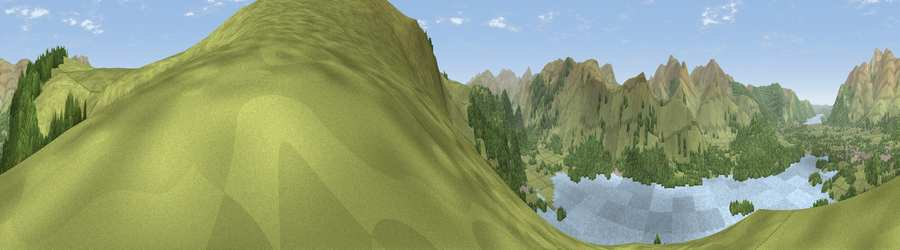

Viewpoint near Keswick
#9596 in England · top 51% of its area beats it · near KeswickThe view, rendered

A 360° render of this exact spot computed from the terrain model, tree cover and land cover — summer colours, afternoon light, calibrated against photographs of famous viewpoints. Real trees, hedges and buildings will differ in detail.
The panorama
Grey silhouette: terrain skyline in each direction (720 bearings, Earth curvature and refraction included). Dashed green: skyline with trees (+15 m) and buildings (+8 m) as obstacles. Blue strip: how far the ground is visible on each bearing.
Where the view opens
Wedge length = distance to the farthest visible ground on that bearing (vegetation-aware). Rings at 10, 25 and 50 km.
What fills the view
38% grassland · 33% woodland · 28% water
Angular shares of the visible panorama (visual magnitude), not map area. Landscape diversity 0.49 (0–1 Shannon).
Key numbers
More beautiful places nearby
The staircase of upgrades: each row has a higher view potential than everything closer. Driving times are estimates from straight-line distance, calibrated against real road routing — check an actual route before setting out.
| Place | Direction | Drive | Score |
|---|---|---|---|
| Walla Crag | NNE · 1 km | ~2 min | 66.0 |
| Bleaberry Fell | SE · 2 km | ~4 min | 71.1 |
| Viewpoint near Legburthwaite | SSE · 3 km | ~7 min | 71.6 |
| Causey Pike | W · 6 km | ~12 min | 77.2 |
| Viewpoint near Threlkeld | ENE · 6 km | ~13 min | 77.6 |
| Great Dodd | E · 7 km | ~14 min | 80.4 |
| Skiddaw Little Man | N · 7 km | ~15 min | 83.0 |
| Viewpoint near Legburthwaite | SE · 8 km | ~15 min | 84.5 |
54.57537, -3.12596 · source: screening · position refined by local search. Computed location — check access rights before visiting.